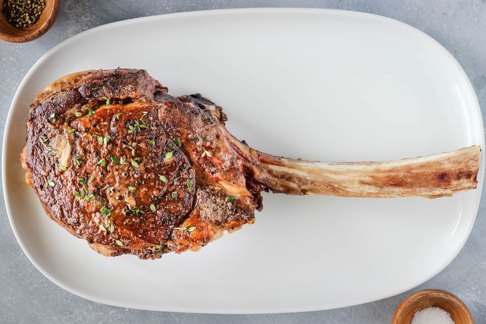

STEAK
Lets go find Betsy
Look for a sleek, vigorous animal with a broad, deep body that's well filled out and covered with a smooth layer of fat. The ideal weight is about 800 pounds . . . and, since you want as much as possible of that mass to be edible, it's best to avoid a critter with heavy bones.
JK lets do this right
This is what you need to get a great steak
- A great local butcher
- Enough money to spend for quality meats
- Weber Grill with at least 6 burners
- Meat Thermometer, we dont want a well done steak. GROSS
- steaks knife and all that shit after the steak is cooked
Follow these steps
- Find you a date
- Go to Maestros
- Ask for a Chefs Table
- Prepare to spend a full ass rack
- Eat like a mother fucking king that you are!!
Go home